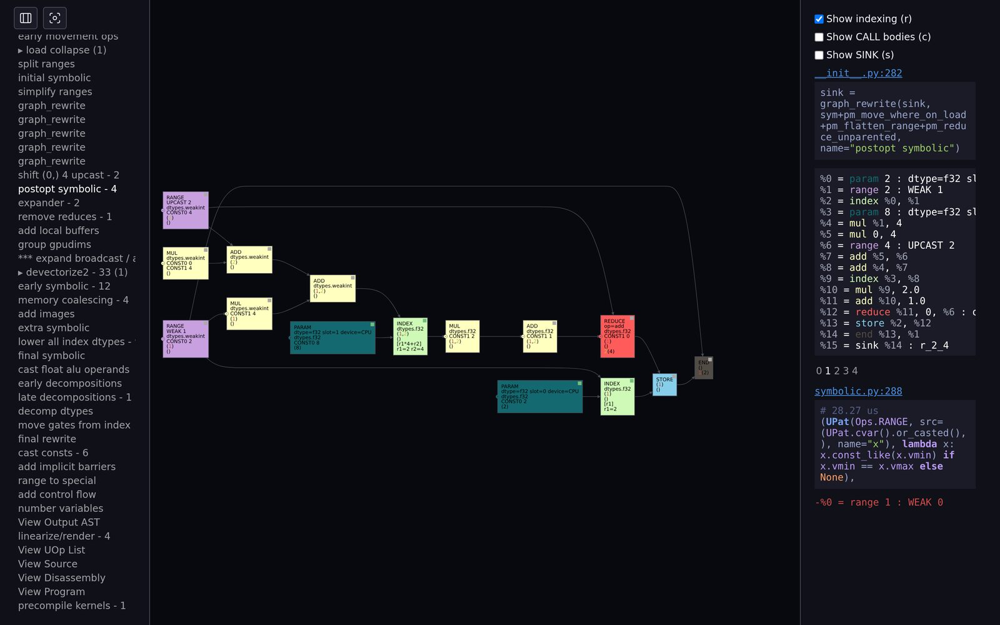
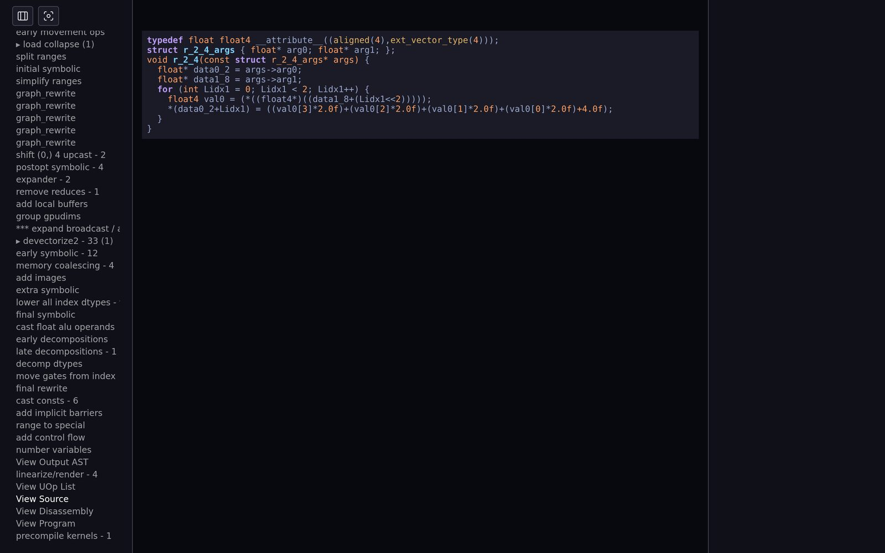

CHAPTER 21Debugging & introspection
tinygrad is small enough to read, and it comes with tools to watch itself: environment variables that print every stage
(DEBUG), a trace of every graph rewrite and every pattern match (VIZ, TRACK_MATCH_STATS), a type system for
the IR (SPEC), knobs that switch the optimizer off or turn it into a search (NOOPT, BEAM), and a regression
system that proves a refactor did not change any generated kernel (process replay). This chapter runs each one on the same small program and shows
the real output. It ends with a playbook for answering any "why does tinygrad do X?" question yourself.
21.1The specimen, and how the switches work
Every tool in this chapter is pointed at this three-line program: a 2×4 Python list, x*2+1, a row sum. It is small enough to read
the whole output and still goes through every stage: a host-to-device copy, a fused elementwise+reduce kernel, an optimization, C codegen and clang.
DEV=CPU python3 examples/21_debug_target.py# Chapter 21 — the tiny program every introspection tool in this chapter is pointed at
# Run: DEV=CPU DEBUG=2 python3 examples/21_debug_target.py (try DEBUG=1..7, VIZ=-1, NOOPT=1, BEAM=2 ...)
from tinygrad import Tensor
x = Tensor([[1., 2., 3., 4.], [5., 6., 7., 8.]]) # python list -> a PYTHON-device buffer, copied to CPU
y = (x * 2 + 1).sum(axis=1) # one fused elementwise+reduce kernel
print(y.tolist()) # .tolist() realizes: schedule -> codegen -> run[24.0, 56.0]All the switches are ContextVars in helpers.py, read from the
environment once at import: DEBUG, BEAM, NOOPT (helpers.py:237),
VIZ and PROFILE (272–276), SPEC
(277), CAPTURE_PROCESS_REPLAY
(257). Because they are ContextVars, you can also change most of them for a
region of code with with Context(DEBUG=4): ... or @Context(BEAM=2). sz.py counts them: 53 flags in this
version (21.9). docs/env_vars.md lists the public ones.
VIZ/TRACK_MATCH_STATS decide whether
PatternMatcher is replaced by TrackedPatternMatcher when uop/ops.py is imported
(ops.py:1690). Set those in the environment, not with Context.21.2Every DEBUG level, verified
Do not trust memory or old docs for what each level prints. The script below runs the specimen at DEBUG=0..8, each in a fresh
process, and classifies every printed line. The classification is the most reliable summary there is:
DEV=CPU python3 examples/21_debug_levels.py# Chapter 21 — what does every DEBUG level print? Run the same program at DEBUG=0..8 and capture it.
# Run: DEV=CPU python3 examples/21_debug_levels.py
#
# Each level is a separate process (DEBUG is read once, at import, into a ContextVar in helpers.py).
# NO_COLOR=1 strips the ANSI colors so the text is easy to store; the chapter's slider replays data/ch21_debug_levels.json.
import json, os, re, subprocess, sys
HERE = os.path.dirname(os.path.abspath(__file__))
target = os.path.join(HERE, "21_debug_target.py")
levels = {}
KINDS = [ # (regex, short name) -- the same buckets the chapter's slider uses for its hover annotations
(r"^compiling ", "tqdm"), (r"^opened device", "device"), (r"^loading ", "dlopen"), (r"^scheduled ", "schedule"),
(r"^\*\*\* ", "kernel-run"), (r"^\S+ +opts: ", "opts"), (r"^%\d+ = ", "uir"), (r"^buffer: ", "alloc"),
(r"^system: ", "system"), (r"^SELECT |^INSERT |^CREATE |^BEGIN|^COMMIT", "sqlite"), (r"^\[", "result")]
def kind(l:str) -> str: return next((n for r, n in KINDS if re.search(r, l)), "code/asm")
for d in range(0, 9):
env = {**os.environ, "DEV": "CPU", "DEBUG": str(d), "NO_COLOR": "1"}
p = subprocess.run([sys.executable, target], env=env, capture_output=True, text=True, cwd=HERE)
# tqdm's "compiling" bar goes to stderr with carriage returns: keep only its final state
err = "\n".join(l.split("\r")[-1] for l in p.stderr.splitlines() if l.strip())
out = (err + "\n" if err else "") + p.stdout
out = re.sub(r"pid:\d+", "pid:N", out).replace(HERE, "examples")
levels[d] = out.rstrip("\n")
kinds = {}
for l in levels[d].splitlines(): kinds[kind(l)] = kinds.get(kind(l), 0) + 1
print(f"DEBUG={d}: {len(levels[d].splitlines()):3d} lines " + ", ".join(f"{k}:{v}" for k, v in kinds.items()))
json.dump(levels, open(os.path.join(HERE, "..", "data", "ch21_debug_levels.json"), "w"), indent=1)
print("wrote data/ch21_debug_levels.json")DEBUG=0: 1 lines result:1
DEBUG=1: 5 lines tqdm:1, device:2, schedule:1, result:1
DEBUG=2: 7 lines tqdm:1, device:2, schedule:1, kernel-run:2, result:1
DEBUG=3: 13 lines tqdm:1, dlopen:5, device:2, schedule:1, opts:1, kernel-run:2, result:1
DEBUG=4: 24 lines tqdm:1, dlopen:5, device:2, schedule:1, opts:1, code/asm:11, kernel-run:2, result:1
DEBUG=5: 38 lines tqdm:1, dlopen:5, device:2, schedule:1, uir:14, opts:1, code/asm:11, kernel-run:2, result:1
DEBUG=6: 38 lines tqdm:1, dlopen:5, device:2, schedule:1, uir:14, opts:1, code/asm:11, kernel-run:2, result:1
DEBUG=7: 83 lines tqdm:1, alloc:14, dlopen:5, device:2, schedule:1, uir:14, opts:1, code/asm:41, system:1, kernel-run:2, result:1
DEBUG=8: 94 lines tqdm:1, alloc:14, dlopen:5, device:2, schedule:1, uir:14, opts:1, code/asm:51, sqlite:1, system:1, kernel-run:2, result:1
wrote data/ch21_debug_levels.jsonEach new kind of line comes from a DEBUG >= n check in the source. Here is where each one lives (found with
grep -rn "DEBUG >=" tinygrad):
| level | adds (for this program) | printed by |
|---|---|---|
| 1 | opened device X; one scheduled N kernels in … ms | CACHE MISS key | … uops in cache | file:line per realize with more than one kernel; the compiling progress bar (stderr); memory reduced from … when the planner saves memory; JIT captured …/jit execs … |
device.py:43 schedule/__init__.py:138 realize.py:253 memory.py:58 jit.py:144 |
| 2 | one *** DEVICE n name arg mem tm (GFLOPS GB/s) line per executed kernel or copy (and DEBUG≥2 synchronizes after each kernel to time it); function … in … ms for @function; BEAM search progress |
realize.py:83–100 function.py:92 search.py:121 |
| 3 | name opts: (Opt(...),) = the OptOps the optimizer applied; shared-library loading; the scheduled line even for 1-kernel schedules; heuristic decisions; on a spec failure, the whole failing program |
codegen/__init__.py:422 c.py:118 spec.py:41 |
| 4 | the generated source (C here; PTX/Metal/… elsewhere; the assembly for ISA renderers) | codegen/__init__.py:454 (and 435, 445) |
| 5 | the kernel AST as UIR before codegen (render_uir(ast)); the name is still the placeholder test |
full_rewrite_to_sink |
| 6 | nothing new on CPU in core tinygrad (only a libusb log level and the CUDA/DSP runtimes check ≥5/6). It matters to viz.cli, where DEBUG=6 prints every UOp graph. | viz/cli.py |
| 7 | buffer: allocate/deallocate N bytes; the disassembly of the compiled kernel (here via objdump -d, plus a system: … line) |
device.py:167,194 codegen/__init__.py:456 |
| 8 | every SQL statement sent to the disk cache (SELECT val FROM 'compile_clang_obj_…') | helpers.py:408 |
examples/21_debug_target.py at that level, from data/ch21_debug_levels.json.21.3VIZ: every graph rewrite, recorded
Every compiler pass in tinygrad is a graph_rewrite with a PatternMatcher (Chapter 5).
That makes one generic tracer enough for the whole compiler. With VIZ set, TRACK_MATCH_STATS defaults to 2
(ops.py:1572) and three things change:
PatternMatcherbecomes TrackedPatternMatcher, which records every successful match as(uop_before, uop_after, upat_location, seconds).- Every function decorated with @rewrite_group (for example
linear_with_vars→ "Schedule 1 -> 2 n1", ordo_to_program→ the kernel name) opens a group. Everygraph_rewrite(..., name=...)inside it appends a TrackedGraphRewrite (location, input sink, matches, name, depth). - At exit, an atexit hook pickles all of this to
$TMPDIR/rewrites.pkl.<user>(UOps are stored as integer trace numbers plus auop_fieldstable so they can be rebuilt), andPROFILE(implied by VIZ) writesprofile.pkl.<user>.
VIZ=1 then execs into tinygrad/viz/serve.py if stdout is a terminal, a web UI on port 8000. VIZ=-1
only saves the files and prints saved viz files, view using: python -m tinygrad.viz.cli. Here is the real web UI on the specimen, with group
r_2_4 → rewrite postopt symbolic → match 1 selected:

The left column lists the groups and, inside each group, every graph_rewrite with its number of matches (- 4). The middle is the graph
after the selected match. On the right: the call site (__init__.py:282, the graph_rewrite(..., name="postopt symbolic") line), the
UIR, the match selector 0 1 2 3 4, the rule that fired (symbolic.py:288: a RANGE whose vmin equals its vmax is a
constant) and the diff it made (-%0 = range 1 : WEAK 0). That size-1 range was left behind by the UPCAST of 4 on a reduce of 4
(Chapter 14). The UI also has View Source / View Disassembly per kernel:

The same thing in a terminal: python -m tinygrad.viz.cli
viz/cli.py reads the same pickles. With no arguments it prints the whole timeline:
every USER Tensor method call (PROFILE wraps them, tensor.py _profile_wrapper), every TINY compiler span and every kernel run.
-s NAME selects a source (or a kernel inside it, and then a rewrite inside that), -q REGEX searches event and rewrite names and prints
the matching graphs, -t [N] aggregates, and --json emits one JSON object per line. DEBUG levels add detail: 3 = base AST, 4 = source,
5 = rewrite steps with match counts, 6 = all graphs, 7 = all rewrites.
DEV=CPU python3 examples/21_viz_cli.py# Chapter 21 — VIZ=-1 (save traces, no web server) + `python -m tinygrad.viz.cli` to read them in a terminal
# Run: DEV=CPU python3 examples/21_viz_cli.py
#
# VIZ=-1 makes helpers.PROFILE and uop/ops.TRACK_MATCH_STATS=2 on, and at exit pickles
# rewrites.pkl.<user> (every graph_rewrite + every pattern match) and profile.pkl.<user> (timeline events)
# into tempfile.gettempdir(). We point TMPDIR at a private directory so concurrent runs don't overwrite each other.
import os, re, shutil, subprocess, sys, tempfile
HERE = os.path.dirname(os.path.abspath(__file__))
tmp = tempfile.mkdtemp(prefix="ch21viz_")
env = {**os.environ, "DEV": "CPU", "NO_COLOR": "1", "TMPDIR": tmp}
def run(title:str, args:list[str], extra_env:dict|None=None, max_lines=40, grep:str|None=None):
p = subprocess.run(args, env={**env, **(extra_env or {})}, capture_output=True, text=True, cwd=HERE)
out = (p.stdout + p.stderr).replace(tmp, "$TMPDIR")
lines = [l for l in out.splitlines() if grep is None or re.search(grep, l)]
print(f"$ {' '.join((f'{k}={v} ' for k, v in (extra_env or {}).items()))}{title}")
print("\n".join(lines[:max_lines]) + (f"\n... ({len(lines) - max_lines} more lines)" if len(lines) > max_lines else ""))
print()
cli = [sys.executable, "-m", "tinygrad.viz.cli"]
run("python3 21_debug_target.py", [sys.executable, "21_debug_target.py"], {"VIZ": "-1"})
run("python -m tinygrad.viz.cli --list", cli + ["--list"])
run("python -m tinygrad.viz.cli -t 8", cli + ["-t", "8"])
run("python -m tinygrad.viz.cli -s TINY (first 24 events)", cli + ["-s", "TINY"], max_lines=24)
run("python -m tinygrad.viz.cli -s CPU", cli + ["-s", "CPU"])
run("python -m tinygrad.viz.cli -s CPU (DEBUG=5 adds every rewrite step, '- N' = matches)", cli + ["-s", "CPU"], {"DEBUG": "5"}, max_lines=80)
run("python -m tinygrad.viz.cli -q 'kernel split'", cli + ["-q", "kernel split"], max_lines=30)
run("python -m tinygrad.viz.cli -s CPU r_2_4 'postopt symbolic' (the matches of one rewrite)", cli + ["-s", "CPU", "r_2_4", "postopt symbolic"], max_lines=40)
run("python -m tinygrad.viz.cli --json -s CPU", cli + ["--json", "-s", "CPU"], max_lines=3)
shutil.rmtree(tmp)$ VIZ=-1 python3 21_debug_target.py
[24.0, 56.0]
rewrote 4 graphs and matched 146 times, saved to $TMPDIR/rewrites.pkl.user
saved viz files, view using: python -m tinygrad.viz.cli
$ python -m tinygrad.viz.cli --list
ALL
USER
TINY
CPU
CPU:COPY
PYTHON:COPY
CPU Memory
PYTHON Memory
$ python -m tinygrad.viz.cli -t 8
USER tolist 159.25ms 1 14.64%
USER data 158.80ms 1 14.59%
USER _buffer 158.70ms 1 14.59%
USER realize 155.93ms 1 14.33%
TINY do_to_program for r_2_4 75.45ms 1 6.93%
USER __wrapper 71.64ms 1 6.58%
TINY Schedule 1 -> 2 n1 71.23ms 1 6.55%
TINY schedule to linear 38.56ms 1 3.54%
Other 198.52ms 131 18.25%
… (181 more lines)… (26 earlier lines omitted)
$ python -m tinygrad.viz.cli -s TINY (first 24 events)
*** TINY Schedule 1 -> 2 n1 tm 71.23ms/ 164.03ms (loc tensor.py:544 _wrapper)
*** TINY View Tensor Graph tm 66.00us/ 164.10ms
*** TINY drop after tm 1320.00us/ 164.45ms
*** TINY bufferize tm 71.00us/ 166.24ms (loc tensor.py:544 _wrapper)
*** TINY substitute bufferize tm 16.00us/ 166.28ms
*** TINY View Graph tm 38.00us/ 166.32ms
*** TINY early transform tensor graph tm 16.22ms/ 172.13ms
*** TINY contiguous_view_offset tm 2309.00us/ 172.84ms
*** TINY replace bufs tm 748.00us/ 188.40ms
*** TINY View Call tm 19.00us/ 189.30ms
*** TINY schedule to linear tm 38.56ms/ 189.33ms
*** TINY prepare_rangeify tm 6213.00us/ 190.66ms
*** TINY multi_pm tm 711.00us/ 190.72ms
*** TINY inline calls tm 766.00us/ 191.46ms
*** TINY earliest rewrites tm 4596.00us/ 192.27ms
*** TINY get_kernel_graph tm 30.52ms/ 196.90ms
*** TINY run_rangeify tm 6979.00us/ 196.90ms
*** TINY get realize tm 705.00us/ 196.91ms
*** TINY consumer map in rangeify tm 99.00us/ 197.63ms
*** TINY reshape tm 2922.00us/ 198.52ms
*** TINY apply rangeify tm 2089.00us/ 201.64ms
*** TINY add device to deviceless tm 65.00us/ 203.81ms
*** TINY symbolic+reduce_collapse+debuf tm 14.96ms/ 204.18ms
*** TINY reduce_collapse tm 9860.00us/ 209.20ms
... (71 more lines)
… (154 more lines)… (53 earlier lines omitted)
$ python -m tinygrad.viz.cli -s CPU
*** CPU r_2_4 tm 9.00us/ 319.19ms (0 GFLOPS 0 GB/s mem 0 GB/s lds )
$ DEBUG=5 python -m tinygrad.viz.cli -s CPU (DEBUG=5 adds every rewrite step, '- N' = matches)
*** CPU r_2_4 tm 9.00us/ 319.19ms (0 GFLOPS 0 GB/s mem 0 GB/s lds )
%0 = param 2 : dtype=f32 slot=0 device=CPU
%1 = range 2 : WEAK 1
%2 = index %0, %1
%3 = param 8 : dtype=f32 slot=1 device=CPU
%4 = mul %1, 4
%5 = range 4 : WEAK 0
%6 = add %4, %5
%7 = index %3, %6
%8 = mul %7, 2.0
%9 = add %8, 1.0
%10 = reduce %9, %5 : op=add
%11 = store %2, %10
%12 = end %11, %1
%13 = sink %12 : test
View Base AST
lower calls
multi_pm
early movement ops
load collapse
reduce_collapse - 6
split ranges
initial symbolic
simplify ranges
graph_rewrite
graph_rewrite
graph_rewrite
graph_rewrite
graph_rewrite
shift (0,) 4 upcast - 2
postopt symbolic - 4
expander - 2
remove reduces - 1
add local buffers
group gpudims
*** expand broadcast / add loads - 5
devectorize2 - 33
reshape
early symbolic - 12
memory coalescing - 4
add images
extra symbolic
lower all index dtypes - 9
final symbolic
cast float alu operands
early decompositions
late decompositions - 1
decomp dtypes
move gates from index
final rewrite
cast consts - 6
add implicit barriers
range to special
add control flow
number variables
View Output AST
linearize/render - 4
View UOp List
typedef float float4 __attribute__((aligned(4),ext_vector_type(4)));
struct r_2_4_args { float* arg0; float* arg1; };
void r_2_4(const struct r_2_4_args* args) {
float* data0_2 = args->arg0;
float* data1_8 = args->arg1;
for (int Lidx1 = 0; Lidx1 < 2; Lidx1++) {
float4 val0 = (*((float4*)((data1_8+(Lidx1<<2)))));
*(data0_2+Lidx1) = ((val0[3]*2.0f)+(val0[2]*2.0f)+(val0[1]*2.0f)+(val0[0]*2.0f)+4.0f);
}
}
View Source
View Disassembly
View Program
precompile kernels - 1
… (76 more lines)… (131 earlier lines omitted)
$ python -m tinygrad.viz.cli -q 'kernel split'
%0 = param 2 : dtype=f32 slot=0 device=CPU
%1 = range 2 : WEAK 0
%2 = index %0, %1
%3 = alloc 8 : dtype=f32 slot=2 device=CPU
%4 = range 8 : WEAK 2
%5 = index %3, %4
%6 = param 8 : dtype=f32 slot=1 device=PYTHON
%7 = index %6, %4
%8 = store %5, %7
%9 = end %8, %4
%10 = after %3, %9
%11 = mul %1, 4
%12 = range 4 : WEAK 1
%13 = add %11, %12
%14 = index %10, %13
%15 = mul %14, 2.0
%16 = add %15, 1.0
%17 = reduce %16, %12 : op=add
%18 = store %2, %17
%19 = end %18, %1
%0 = alloc 8 : dtype=f32 slot=2 device=CPU
%1 = range 8 : WEAK 2
%2 = index %0, %1
%3 = param 8 : dtype=f32 slot=1 device=PYTHON
%4 = index %3, %1
%5 = store %2, %4
%6 = end %5, %1
*** TINY kernel split tm 2407.00us/ 221.60ms
*** TINY kernel split tm 88.00us/ 224.73ms
… (45 more lines)… (162 earlier lines omitted)
$ python -m tinygrad.viz.cli -s CPU r_2_4 'postopt symbolic' (the matches of one rewrite)
*** CPU r_2_4 tm 9.00us/ 319.19ms (0 GFLOPS 0 GB/s mem 0 GB/s lds )
%0 = param 2 : dtype=f32 slot=0 device=CPU
%1 = range 2 : WEAK 1
%2 = index %0, %1
%3 = param 8 : dtype=f32 slot=1 device=CPU
%4 = mul %1, 4
%5 = range 1 : WEAK 0
%6 = mul %5, 4
%7 = range 4 : UPCAST 2
%8 = add %6, %7
%9 = add %4, %8
%10 = index %3, %9
%11 = mul %10, 2.0
%12 = add %11, 1.0
%13 = reduce %12, %5, %7 : op=add
%14 = store %2, %13
%15 = end %14, %1
%16 = sink %15 : r_2_4
%0 = param 2 : dtype=f32 slot=0 device=CPU
%1 = range 2 : WEAK 1
%2 = index %0, %1
%3 = param 8 : dtype=f32 slot=1 device=CPU
%4 = mul %1, 4
%5 = range 1 : WEAK 0
%6 = mul %5, 4
%7 = range 4 : UPCAST 2
%8 = add %6, %7
%9 = add %4, %8
%10 = index %3, %9
%11 = mul %10, 2.0
%12 = add %11, 1.0
%13 = reduce %12, %5, %7 : op=add
%14 = store %2, %13
%15 = end %14, %1
%16 = sink %15 : r_2_4
uop/symbolic.py:288
# 15.68 us
(UPat(Ops.RANGE, src=(UPat.cvar().or_casted(),), name="x"), lambda x: x.const_like(x.vmin) if x.vmin == x.vmax else None),
-%0 = range 1 : WEAK 0
%0 = param 2 : dtype=f32 slot=0 device=CPU
... (67 more lines)
… (2 more lines)… (205 earlier lines omitted)
$ python -m tinygrad.viz.cli --json -s CPU
{"device": "CPU", "name": "r_2_4", "dur_ms": 0.009000000000000001, "st_ms": 319.192, "fmt": {"FLOPS": 1777777, "B/s mem": 4444444, "B/s lds": 4444444}, "ref": 1, "ext": ""}Read the DEBUG=5 -s CPU tab as the table of contents of Chapter 15: every named pass that
full_rewrite_to_sink runs, in order, with how many rules fired in each (devectorize2 - 33 is the busiest). The
-q 'kernel split' tab answers "why 2 kernels?" directly: the first graph is the compute kernel, which reads an alloc 8 that a
second, copy-shaped graph fills from the PYTHON-device param 8.
PROFILE: the timeline without the rewrites
PROFILE defaults to abs(VIZ) (helpers.py:276), and you can also set it on its own.
It records three kinds of events into profile.pkl: every public Tensor method call (via
_profile_wrapper; the USER source in the --list tab), compiler spans
(TINY), and device kernel runs with real timestamps (CPU). Call profile_marker("name") in your
program to drop named markers. viz.cli --interval START [END] then restricts -t or the timeline to events between two markers. That is how you time
"step 10 to step 20 of training" while excluding warm-up.
Replaying the trace yourself
The pickle is not a black box. The next script captures it (TRACK_MATCH_STATS=2 without the server) and decodes it with the viz server's own
load_rewrites and get_full_rewrite,
in a fresh process, as the server does. It writes every step that had matches to JSON for the browser below.
DEV=CPU python3 examples/21_rewrite_trace.py# Chapter 21 — capture the tracked rewrites (what VIZ shows) for the debug target, and turn them into JSON
# Run: DEV=CPU python3 examples/21_rewrite_trace.py
#
# TRACK_MATCH_STATS=2 (implied by VIZ) swaps PatternMatcher for TrackedPatternMatcher (uop/ops.py) and makes every
# @rewrite_group / graph_rewrite call append a TrackedGraphRewrite(loc, sink, matches, name, depth, ...) to
# uop.ops.tracked_ctxs. A match is (uop_before, uop_after, upat_location, seconds), stored as integer trace numbers;
# uop_fields maps trace numbers back to (op, src, arg). At exit the RewriteTrace is pickled to rewrites.pkl.<user>.
# Like the real viz server/CLI we decode that pickle in a *fresh* process with tinygrad/viz/serve.py's own
# load_rewrites + get_full_rewrite (rebuilding the UOps in the process that made them is not supported).
import os, sys, json, subprocess, tempfile, getpass, shutil
HERE = os.path.dirname(os.path.abspath(__file__))
tmp = tempfile.mkdtemp(prefix="ch21trace_") # private TMPDIR: rewrites.pkl.<user> lands here, not in the shared /tmp
env = {**os.environ, "DEV": "CPU", "TRACK_MATCH_STATS": "2", "PRINT_MATCH_STATS": "0", "TMPDIR": tmp}
p = subprocess.run([sys.executable, os.path.join(HERE, "21_debug_target.py")], env=env, capture_output=True, text=True)
print(p.stdout.replace(tmp, "$TMPDIR").strip())
os.environ["VIZ"] = "0"
from tinygrad.uop.ops import RewriteTrace
from tinygrad.viz import serve as viz
trace = viz.load_pickle(os.path.join(tmp, f"rewrites.pkl.{getpass.getuser()}"), default=RewriteTrace([], [], {}))
shutil.rmtree(tmp)
data = viz.VizData(trace)
viz.load_rewrites(data)
nodes: dict[str, dict] = {} # one global node table: id -> {label, src}; UOps are hash-consed so ids are stable
short: dict[str, str] = {} # node signature (label + srcs) -> short id. python id()s can be reused once a
def add_graph(g:dict) -> dict[int, str]: # frame's UOps are freed, so identity is the content, exactly like hash-consing
local: dict[int, str] = {}
for k, v in g.items(): # g is in toposort order (viz.uop_to_json walks x.toposort())
if v["exclude"]: continue
label, srcs = viz.ansistrip(v["label"]), [local[s] for _, s in v["src"] if s in local]
local[k] = short.setdefault(label + "|" + ",".join(srcs), f"u{len(short)}")
nodes.setdefault(local[k], {"label": label, "src": srcs})
return local
groups, total, failed = [], 0, []
for ci, ctx in enumerate(data.ctxs):
steps = []
for si, rw in enumerate(data.trace.rewrites[ci]):
frames = []
if rw.matches:
try:
for f in viz.get_full_rewrite(data, rw):
local = add_graph(f["graph"])
frames.append({"nodes": list(local.values()), "change": [local[c] for c in (f["change"] or []) if c in local],
"upat": None if f["upat"] is None else {"loc": f"{f['upat'][0][0].split('tinygrad/')[-1]}:{f['upat'][0][1]}", "code": f["upat"][1]},
"diff": f["diff"]})
total += 1
except Exception as e: # a few intermediate graphs can't be re-labelled by viz's uop_to_json; keep the frames we got
failed.append(f"{ctx['name']} / {rw.name}: {type(e).__name__} {e}")
steps.append({"name": rw.name, "depth": rw.depth, "matches": len(rw.matches), "loc": f"{rw.loc[0].split('tinygrad/')[-1]}:{rw.loc[1]}",
"bottom_up": rw.bottom_up, "frames": frames})
groups.append({"name": viz.ansistrip(ctx["name"]), "steps": steps})
print(f"group {ci}: {groups[-1]['name']!r:28s} {len(steps):3d} rewrites, {sum(s['matches'] for s in steps):4d} matches")
out = os.path.join(os.path.dirname(os.path.abspath(__file__)), "..", "data", "ch21_trace.json")
json.dump({"groups": groups, "nodes": nodes}, open(out, "w"))
for f in failed: print("could not replay:", f)
print(f"{total} frames, {len(nodes)} distinct UOps -> data/ch21_trace.json ({os.path.getsize(out)//1024} KB)")[24.0, 56.0]
rewrote 4 graphs and matched 146 times, saved to $TMPDIR/rewrites.pkl.user
group 0: 'Schedule 1 -> 2 n1' 32 rewrites, 49 matches
group 1: 'r_2_4' 41 rewrites, 90 matches
group 2: 'HCQ Compile 2 Kernels n1' 4 rewrites, 3 matches
group 3: 'HCQ Link 2 Kernels n1' 2 rewrites, 4 matches
could not replay: Schedule 1 -> 2 n1 / kernel split: KeyError dtypes.void
179 frames, 1124 distinct UOps -> data/ch21_trace.json (202 KB)KeyError: dtypes.void
while computing a dtype for a label), so it is skipped and reported. Everything else replays. The real UI shows the same graphs.graph_rewrite steps. Steps in white had matches (the number is the match count); indentation is
nesting depth. Click one, then scrub through its matches. Each frame shows the graph after that match (the same labels as VIZ; CONSTs are folded into
their consumers), the rule (file:line and its source) and the diff. The UOps the rule changed are highlighted.
Try r_2_4 → postopt symbolic (the screenshot above), devectorize2 (33 matches) or Schedule → apply rangeify.21.4TRACK_MATCH_STATS / PRINT_MATCH_STATS: which rules fire, and what they cost
TRACK_MATCH_STATS=1 gives you the tracking pattern matcher without the per-match graph log. For every UPat it counts
[matches, attempts, time in failed attempts, time in successful matches], and print_match_stats
prints the table at exit, sorted by total time. PRINT_MATCH_STATS defaults to on when tracking without VIZ; set
PRINT_MATCH_STATS=0 to silence it. TRACK_MATCH_STATS=3 also prints each match's time as it happens. This is the profiler for the
compiler itself, and it is how you find a slow rule or a dead one.
DEV=CPU python3 examples/21_match_stats.py# Chapter 21 — TRACK_MATCH_STATS=1: which rewrite rules fired, how often, and what they cost
# Run: DEV=CPU python3 examples/21_match_stats.py
#
# With TRACK_MATCH_STATS>=1, PatternMatcher *is* TrackedPatternMatcher (uop/ops.py). For every UPat it counts
# [matches, attempts, time spent in failed attempts, time spent in successful matches]; an atexit hook prints the table
# (PRINT_MATCH_STATS defaults to on unless VIZ is set). Columns: matches / attempts -- match_ms / total_ms -- file:line rule
import os, re, subprocess, sys
HERE = os.path.dirname(os.path.abspath(__file__))
env = {**os.environ, "DEV": "CPU", "TRACK_MATCH_STATS": "1", "NO_COLOR": "1"}
p = subprocess.run([sys.executable, os.path.join(HERE, "21_debug_target.py")], env=env, capture_output=True, text=True)
lines = p.stdout.splitlines()
rows = [l for l in lines if re.match(r"^\s*\d+ /\s+\d+ --", l)]
print(lines[0]) # the program's own output
print(f"{len(rows) - 1} rules were tried at least once. The 12 most expensive (the table is sorted by total time):")
for l in rows[-13:]: print(l[:150])
print(lines[-1])
by_count = sorted(rows[:-1], key=lambda l: -int(l.split("/")[0]))
print("\nmost frequently *matched* rules:")
for l in by_count[:8]: print(l[:150])
never = [l for l in rows[:-1] if l.strip().startswith("0 /")]
print(f"\n{len(never)} rules were attempted but never matched, e.g.:")
for l in never[:3]: print(l[:150])[24.0, 56.0]
226 rules were tried at least once. The 12 most expensive (the table is sorted by total time):
0 / 147 -- 0.00 / 2.18 ms -- symbolic.py:167 (UPat(GroupOp.Binary-{Ops.THREEFRY}, src=[casted_const, bare_const], name="a"), l
1 / 4 -- 2.83 / 2.83 ms -- __init__.py:461 (UPat(Ops.PROGRAM, src=(UPat(Ops.SINK, name="sink"), UPat(Ops.LINEAR, name="lin")
0 / 20 -- 0.00 / 3.10 ms -- symbolic.py:259 ((UPat.var("y") + UPat.var("x") * UPat.cvar("c")) + UPat.var("x"),
2 / 2 -- 3.41 / 3.41 ms -- rangeify.py:335 (UPat((Ops.STORE, Ops.END), name="x"), split_store),
0 / 4 -- 0.00 / 4.36 ms -- simplify.py:107 ).reduce(UPat.var("r"), arg=Ops.ADD), lambda r,val,lower=None,upper=None:
884 / 884 -- 4.67 / 4.67 ms -- upat.py:128 (UPat(Ops.CUSTOM, src=UPat(Ops.CUSTOMI), name="x"), lambda x: UOp(Ops.CUSTOMI, ar
0 / 7 -- 0.00 / 4.92 ms -- symbolic.py:254 ((UPat.var("y") + UPat.var("x") * UPat.cvar("c0")) + UPat.var("x") * UPat.cvar("c
1 / 3 -- 7.40 / 7.40 ms -- __init__.py:463 (UPat(Ops.PROGRAM, src=(UPat(), UPat(Ops.LINEAR, name="lin")), name="prg"), do_re
412 / 1387 -- 3.73 / 9.16 ms -- upat.py:114 pm_proc = PatternMatcher([(UPat(Ops.AND, name="a"), do_process_and)], compiled=Fa
0 / 1 -- 0.00 / 10.12 ms -- simplify.py:146 (UPat(Ops.REDUCE, src=(UPat.var("u"),), allow_any_len=True, arg=(Ops.ADD, 0), nam
0 / 1 -- 0.00 / 15.26 ms -- __init__.py:222 (UPat((Ops.COPY, Ops.STAGE), src=(UPat(GroupOp.Movement|{Ops.BITCAST}, name="src"
1 / 4 -- 34.83 / 34.84 ms -- __init__.py:150 (UPat(Ops.CALL, name="call"), lower_sink_to_linear),
2384 / 6083 -- 100.70 / 221.69 ms -- TOTAL
305 rules, 99 matched once
most frequently *matched* rules:
884 / 884 -- 4.67 / 4.67 ms -- upat.py:128 (UPat(Ops.CUSTOM, src=UPat(Ops.CUSTOMI), name="x"), lambda x: UOp(Ops.CUSTOMI, ar
432 / 432 -- 1.81 / 1.81 ms -- upat.py:122 (UPat(Ops.PYLITERAL, name="x"), wrap),
412 / 1387 -- 3.73 / 9.16 ms -- upat.py:114 pm_proc = PatternMatcher([(UPat(Ops.AND, name="a"), do_process_and)], compiled=Fa
312 / 312 -- 1.86 / 1.86 ms -- upat.py:129 (UPat(Ops.INDEX, src=(UPat(Ops.CUSTOMI, name="x"), UPat(Ops.CONST, name="c"))),
34 / 388 -- 0.18 / 1.23 ms -- upat.py:125 (UPat(Ops.AND, src=UPat(Ops.CUSTOMI), name="x"), lambda x: UOp(Ops.CUSTOMI, arg=(
27 / 27 -- 0.39 / 0.39 ms -- spec.py:56 (UPat(Ops.CONST, src=(), name="x"), lambda x: x.is_invalid or type(x.val) is type
19 / 187 -- 0.01 / 0.41 ms -- ops.py:1860 _substitute = PatternMatcher([(UPat(tuple(Ops), name="x"), lambda ctx,x: ctx.get(
16 / 16 -- 0.26 / 0.26 ms -- spec.py:74 (UPat(GroupOp.ALU, name="x"), lambda x: all(matches_dtype(y, x.dtype) or y.dtype
127 rules were attempted but never matched, e.g.:
0 / 2 -- 0.00 / 0.00 ms -- rangeify.py:307 (UPat(Ops.PARAM, name="buf"), lambda ctx, buf:
0 / 3 -- 0.00 / 0.00 ms -- rangeify.py:305 (UPat((Ops.BUFFER, Ops.ALLOC, Ops.MSTACK, Ops.MSELECT), name="buf"), add_buf),
0 / 3 -- 0.00 / 0.19 ms -- rangeify.py:315 (UPat(Ops.RANGE, name="r"), lambda ctx, r: ctx.ranges.setdefault(r.arg)),- The single most expensive rule is
lower_sink_to_linear(schedule/__init__.py:150, 35 of the 222 ms TOTAL). Its time includes the whole scheduler it calls, because its rule body runs the nested rewrites. Read the ms column as inclusive. - The most frequently matched rules live in
uop/upat.py: that is the UPat compiler (UPAT_COMPILE=1, the default), which itself uses PatternMatchers to turn each UPat into Python source the first time it is used. The tracker sees the compiler compiling its own patterns. - The spec rules (
spec.py:56,:74) show up becausetype_verifyruns at the defaultSPEC=1(next section). - 127 rules were attempted and never matched for this program. That is normal: a PatternMatcher is a bag of rules for every situation. The cost is kept
low by indexing rules by
Op(pdict) and by theearly_rejectset of required source ops.
21.5SPEC and type_verify: the IR has a type system
A UOp is just (op, dtype, src, arg), and nothing in the constructor stops you from building nonsense. The spec is what does.
uop/spec.py defines it as PatternMatchers whose rules return True (valid),
False (invalid) or None (no opinion), the same machinery as everything else:
| spec | for | checked by (when SPEC≥1, the default) |
|---|---|---|
| spec_shared | rules valid everywhere: SINK, CONST, ALU dtype agreement, comparisons, WHERE, CAST | (included in the others) |
| spec_tensor | the tensor graph: movement ops, BUFFER/ALLOC, REDUCE, COPY, multi-device ops | transform_to_call and lower_sink_to_linear (schedule/__init__.py:130), full_rewrite_to_sink on entry (codegen:255) |
| spec_kernel_graph | the kernel graph after splitting | get_kernel_graph (rangeify.py:362) |
| spec_program | renderer-ready programs: no movement ops, no weak dtypes, no Invalid, IF/ENDIF, SPECIAL is int32 | after lowering (codegen:370) |
| spec_full | union of all of them plus intermediate ops | every UOp at construction when SPEC≥2 (UOpMetaClass.__call__); SPEC=3 also computes shapes |
def type_verify(ast:UOp|list[UOp], check_spec:PatternMatcher, enter_calls=False):
lst = list(ast.toposort(enter_calls=enter_calls)) if isinstance(ast, UOp) else ast
with Context(TRACK_MATCH_STATS=0):
for i,u in enumerate(lst):
ret: bool|None = check_spec.rewrite(u)
if ret is not True:
if DEBUG >= 3: print(render_uir(lst))
raise RuntimeError(f"UOp verification failed at {i} on {u.op} {u.dtype} {len(u.src)} {[(x.op, x.dtype, x.arg) for x in u.src]} {u.arg}")Note ret is not True: a UOp that no rule claims is invalid too. Here are some deliberately broken graphs:
DEV=CPU python3 examples/21_spec.py# Chapter 21 — the UOp spec: what a valid graph looks like, and what an invalid one fails with
# Run: DEV=CPU python3 examples/21_spec.py
#
# uop/spec.py defines the spec as PatternMatchers that return True for valid UOps (spec_tensor, spec_program,
# spec_kernel_graph, spec_full). type_verify(uops, spec) runs the matcher on every UOp in toposort order and raises
# RuntimeError("UOp verification failed at {i} on {op} {dtype} {len(src)} {[(src.op, src.dtype, src.arg)...]} {arg}")
# on the first one that does not return True. SPEC=1 (the default) runs it at a few checkpoints (schedule + codegen);
# SPEC=2 additionally checks every UOp *as it is constructed* (UOpMetaClass.__call__ in uop/ops.py).
import json, os, subprocess, sys
from tinygrad import dtypes
from tinygrad.uop.ops import UOp, Ops
from tinygrad.uop.spec import type_verify, spec_tensor, spec_program, spec_full
HERE = os.path.dirname(os.path.abspath(__file__))
a = UOp.const(1.0, dtypes.float) # NOTE: a typed const is CAST(CONST(weak)), see UOp.const
b = UOp.const(2.0, dtypes.float)
i = UOp.const(3, dtypes.int)
cases = [
("valid: float ADD float", (a + b), spec_tensor),
("ADD of float and int (operands must share the result dtype)", UOp(Ops.ADD, src=(a, i)), spec_tensor),
("bitwise AND on floats", UOp(Ops.AND, src=(a, b)), spec_tensor),
("CMPLT comparing a float with an int", UOp(Ops.CMPLT, src=(a, i)), spec_tensor),
("WHERE with a float condition", UOp(Ops.WHERE, src=(a, a, b)), spec_tensor),
("CAST whose arg is not a DType", UOp(Ops.CAST, src=(a,), arg="float"), spec_tensor),
("SQRT of an int (surprise: dtype inference makes it float32, so it passes)", UOp(Ops.SQRT, src=(i,)), spec_tensor),
("a movement op inside a *program* (spec_program forbids RESHAPE)", a.reshape((1,)), spec_program),
]
def safe_uir(u:UOp) -> str:
try: return u.render_uir()
except Exception: return f"UOp(Ops.{u.op.name}, src=<{len(u.src)} srcs>, arg={u.arg!r}) (render_uir itself chokes on it)"
results = []
for title, u, spec in cases:
try:
type_verify(u, spec)
msg = "OK"
except Exception as e:
msg = f"{type(e).__name__}: {e}"
print(f"--- {title}\n {msg}")
results.append({"title": title, "uir": safe_uir(u), "spec": {id(spec_tensor): "spec_tensor", id(spec_program): "spec_program"}[id(spec)], "error": msg})
print("\n--- SPEC=2: the check runs at construction time, inside UOpMetaClass.__call__")
code = ("from tinygrad import dtypes\nfrom tinygrad.uop.ops import UOp, Ops\n"
"UOp(Ops.ADD, src=(UOp.const(1.0, dtypes.float), UOp.const(3, dtypes.int)))\nprint('constructed fine, nobody checked')")
for spec in ("1", "2"):
p = subprocess.run([sys.executable, "-c", code], env={**os.environ, "DEV": "CPU", "SPEC": spec}, capture_output=True, text=True)
out = (p.stdout + p.stderr).strip().splitlines()
last = next((l for l in out if l.startswith(("RuntimeError", "constructed"))), out[-1])
print(f" SPEC={spec}: {last[:160]}")
results.append({"title": f"SPEC={spec}: construct ADD(float, int)", "uir": "UOp(Ops.ADD, src=(UOp.const(1.0, dtypes.float), UOp.const(3, dtypes.int)))", "spec": "spec_full (SPEC>=2)" if spec == "2" else "(none at construction)", "error": last})
json.dump(results, open(os.path.join(HERE, "..", "data", "ch21_spec.json"), "w"), indent=1)
print("wrote data/ch21_spec.json")--- valid: float ADD float
OK
--- ADD of float and int (operands must share the result dtype)
RuntimeError: UOp verification failed at 4 on Ops.ADD dtypes.f32 2 [(Ops.CAST, dtypes.f32, dtypes.f32), (Ops.CAST, dtypes.i32, dtypes.i32)] None
--- bitwise AND on floats
RuntimeError: UOp verification failed at 4 on Ops.AND dtypes.f32 2 [(Ops.CAST, dtypes.f32, dtypes.f32), (Ops.CAST, dtypes.f32, dtypes.f32)] None
--- CMPLT comparing a float with an int
RuntimeError: UOp verification failed at 4 on Ops.CMPLT dtypes.bool 2 [(Ops.CAST, dtypes.f32, dtypes.f32), (Ops.CAST, dtypes.i32, dtypes.i32)] None
--- WHERE with a float condition
RuntimeError: where cond must be bool, got dtypes.f32
--- CAST whose arg is not a DType
AssertionError: CAST/BITCAST arg must be DType, got float
--- SQRT of an int (surprise: dtype inference makes it float32, so it passes)
OK
--- a movement op inside a *program* (spec_program forbids RESHAPE)
RuntimeError: UOp verification failed at 3 on Ops.RESHAPE dtypes.f32 2 [(Ops.CAST, dtypes.f32, dtypes.f32), (Ops.CONST, dtypes.weakint, 1)] None
--- SPEC=2: the check runs at construction time, inside UOpMetaClass.__call__
SPEC=1: constructed fine, nobody checked
SPEC=2: RuntimeError: SPEC ISSUE False: UOp(Ops.ADD, arg=None, src=(
wrote data/ch21_spec.jsonThere are three lines of defense, and the output shows all three. (1) dtype inference at construction
(dtype_from_uop) already rejects a non-bool WHERE condition and a CAST whose arg is not a DType, before any spec runs. (2)
type_verify rejects graphs that build fine but break a rule: an ADD of f32 and i32, AND on floats, a RESHAPE inside a program. The
error names the position in toposort order and the sources. (3) SPEC=2 moves check (2) to the moment of construction, so the traceback
points at the line that built the bad UOp instead of a later pass. The surprise case is worth remembering: SQRT of an int is valid, because
dtype inference makes transcendentals of ints produce the default float.
spec_shared's ALU/comparison/WHERE/bitwise rules + spec_program's ban on
movement ops). It is a mirror for exploring, not the real spec; the real one has ~100 rules.SPEC=1 (the default) verifies whole graphs at a few checkpoints. SPEC=2 runs spec_full inside
UOpMetaClass.__call__ for every new UOp, which is slower but points at the culprit.21.6NOOPT and BEAM: switch the optimizer off, or make it search
The kernel AST is the same either way. Only the optimization stage between the AST and lowering changes (Chapter 14).
NOOPT=1 applies no OptOps, so the C is the plain loop nest the AST describes. This is the first thing to try when a kernel is wrong, because it tells you
whether the bug is in an optimization. The default runs hand_coded_optimizations.
BEAM=n runs beam_search: it compiles and times candidate
OptOp sequences on the real device and keeps the best n at each level. Results are cached in the disk cache, so IGNORE_BEAM_CACHE=1
forces a fresh search.
DEV=CPU python3 examples/21_noopt_beam.py# Chapter 21 — NOOPT and BEAM change the *same* kernel; process replay is "same input, compare generated code"
# Run: DEV=CPU python3 examples/21_noopt_beam.py
#
# The kernel AST is identical in all three runs; only the optimizer stage differs:
# NOOPT=1 -> no OptOps applied (the plain loops the AST describes)
# default -> the hand-coded heuristic (codegen/opt/heuristic.py)
# BEAM=2 -> beam search over OptOps, timing real candidates (codegen/opt/search.py)
# We print the applied opts and the C for each. Then the idea behind process replay: lower the same captured AST
# twice and diff the source -- a refactor that changes nothing must give an empty diff.
import difflib, os, re, subprocess, sys
HERE = os.path.dirname(os.path.abspath(__file__))
prog = """
from tinygrad import Tensor
a = Tensor.rand(64, 64).realize()
b = (a @ a.T).realize()
"""
for title, extra in (("NOOPT=1", {"NOOPT": "1"}), ("default (hand-coded heuristic)", {}), ("BEAM=2", {"BEAM": "2", "IGNORE_BEAM_CACHE": "1"})):
env = {**os.environ, "DEV": "CPU", "DEBUG": "4", "NO_COLOR": "1", **extra}
p = subprocess.run([sys.executable, "-c", prog], env=env, capture_output=True, text=True)
out = p.stdout
# the matmul kernel is the one whose name starts with r_ (a reduce)
name = re.search(r"void (r_\w+)\(", out).group(1)
m = re.search(rf"^{name}\s+opts: (.*)$", out, re.M)
src = out[out.index(f"void {name}("):]
src = src[:src.index("\n}\n") + 2]
run = re.search(rf"^\*\*\* CPU\s+\d+ {name}\s.*tm\s+([\d.]+\w+)/", out, re.M)
print(f"===== {title}: kernel {name} opts={m.group(1) if m else '()'} time={run.group(1) if run else '?'}")
lines = src.splitlines()
print("\n".join(lines[:14]) + (f"\n ... ({len(lines)} lines)" if len(lines) > 14 else ""))
print()
print("===== process replay, in miniature")
from tinygrad import Tensor, Device
from tinygrad.uop.ops import Ops
from tinygrad.codegen import to_program
from tinygrad.helpers import Context
x = Tensor.rand(4, 4).realize()
ast = next(c.src[0] for c in Tensor.schedule_linear((x * 2).sum(1)).src if c.src[0].op is Ops.SINK)
ren = Device["CPU"].renderer
def src_of(prg): return next(s.arg for s in prg.src if s.op is Ops.SOURCE)
good = src_of(to_program(ast, ren)) # "master"
same = src_of(to_program(ast, ren)) # "your branch", a pure refactor
with Context(NOOPT=1): changed = src_of(to_program(ast, ren)) # "your branch", which (accidentally) changed codegen
for nm, cmp in (("refactor", same), ("behavior change", changed)):
diff = [l for l in difflib.unified_diff(good.splitlines(), cmp.splitlines(), lineterm="") if not l.startswith(("---", "+++"))]
print(f"{nm}: {len(diff)} diff lines" + ("".join("\n " + l for l in diff[:12]) if diff else " -> process replay passes"))===== NOOPT=1: kernel r_64_64_64 opts=() time=169.62us
void r_64_64_64(const struct r_64_64_64_args* args) {
float* data0_4096 = args->arg0;
float* data1_4096 = args->arg1;
float buf0[1];
for (int Lidx1 = 0; Lidx1 < 64; Lidx1++) {
int alu0 = (Lidx1<<6);
for (int Lidx2 = 0; Lidx2 < 64; Lidx2++) {
*(buf0+0) = 0.0f;
for (int Lidx0 = 0; Lidx0 < 64; Lidx0++) {
float val0 = (*(data1_4096+(alu0+Lidx0)));
float val1 = (*(data1_4096+((Lidx2<<6)+Lidx0)));
*(buf0+0) = ((*(buf0+0))+(val0*val1));
}
*(data0_4096+(alu0+Lidx2)) = (*(buf0+0));
... (17 lines)
===== default (hand-coded heuristic): kernel r_16_16_4_4_16_4 opts=(Opt(op=OptOps.SPLIT, axis=1, arg=(4, AxisType.UPCAST)), Opt(op=OptOps.SPLIT, axis=0, arg=(4, AxisType.UPCAST)), Opt(op=OptOps.SPLIT, axis=4, arg=(4, AxisType.UPCAST))) time=40.98us
void r_16_16_4_4_16_4(const struct r_16_16_4_4_16_4_args* args) {
float* data0_4096 = args->arg0;
float* data1_4096 = args->arg1;
float buf0[16];
for (int Lidx1 = 0; Lidx1 < 16; Lidx1++) {
int alu0 = (Lidx1<<8);
for (int Lidx2 = 0; Lidx2 < 16; Lidx2++) {
*(buf0+0) = 0.0f;
*(buf0+1) = 0.0f;
*(buf0+10) = 0.0f;
*(buf0+11) = 0.0f;
*(buf0+12) = 0.0f;
*(buf0+13) = 0.0f;
*(buf0+14) = 0.0f;
... (60 lines)
===== BEAM=2: kernel r_4_16_4_4_4_16_4 opts=(Opt(op=OptOps.SPLIT, axis=0, arg=(4, AxisType.UPCAST)), Opt(op=OptOps.SPLIT, axis=0, arg=(4, AxisType.UPCAST)), Opt(op=OptOps.SPLIT, axis=4, arg=(4, AxisType.UPCAST)), Opt(op=OptOps.SPLIT, axis=1, arg=(4, AxisType.UPCAST))) time=29.17us
void r_4_16_4_4_4_16_4(const struct r_4_16_4_4_4_16_4_args* args) {
float* data0_4096 = args->arg0;
float* data1_4096 = args->arg1;
float buf0[64];
for (int Lidx1 = 0; Lidx1 < 4; Lidx1++) {
int alu0 = (Lidx1<<10);
for (int Lidx2 = 0; Lidx2 < 16; Lidx2++) {
*(buf0+0) = 0.0f;
*(buf0+1) = 0.0f;
*(buf0+10) = 0.0f;
*(buf0+11) = 0.0f;
*(buf0+12) = 0.0f;
*(buf0+13) = 0.0f;
*(buf0+14) = 0.0f;
... (180 lines)
===== process replay, in miniature
refactor: 0 diff lines -> process replay passes
behavior change: 19 diff lines
@@ -1,10 +1,15 @@
-typedef float float4 __attribute__((aligned(4),ext_vector_type(4)));
+
struct r_4_4_args { float* arg0; float* arg1; };
void r_4_4(const struct r_4_4_args* args) {
float* data0_4 = args->arg0;
float* data1_16 = args->arg1;
+ float buf0[1];
for (int Lidx1 = 0; Lidx1 < 4; Lidx1++) {
- float4 val0 = (*((float4*)((data1_16+(Lidx1<<2)))));
- *(data0_4+Lidx1) = ((val0[0]+val0[1]+val0[2]+val0[3])*2.0f);
+ *(buf0+0) = 0.0f;The kernel name encodes the optimization: r_64_64_64 (three plain loops) became r_16_16_4_4_16_4 (both output axes split and upcast by 4, the
reduce unrolled by 4: a 4×4 register tile, see float buf0[16]). BEAM picked a different tiling, r_4_16_4_4_4_16_4, with a 64-element accumulator (float buf0[64]). Re-running can pick yet another
tiling: candidates within noise of each other swap places. Read the times carefully: each is a single run of a ~40 µs kernel on a shared CPU (169 µs NOOPT,
41 µs heuristic, 29 µs BEAM in this run). In earlier runs the BEAM kernel measured slower than the heuristic, which is noise. BEAM's choice was made on its own repeated timings. To compare kernels properly, use DEBUG=2 over many runs, or
python -m tinygrad.viz.cli -t on a VIZ=-1/PROFILE=1 run.
21.7Process replay: refactors must not change generated code
tinygrad gets refactored constantly, and most PRs say "no behavior change". Process replay checks that claim mechanically:
- Capture. CI runs the test suite on your branch with
CAPTURE_PROCESS_REPLAY=1. Every function decorated@rewrite_group(..., replay="process_replay")pickles its inputs, the values of every ContextVar, the test location (get_process_replay_loc, which finds the unittest frame) and its return value into the sqliteCACHEDB(ops.py:1651). In this version that is do_to_program: AST + renderer → PROGRAM (with source). - Replay. Check out
master, run process_replay.py. For each captured row it restores the ContextVars, calls master'sto_programon the same AST, and unified-diffs master's source against your branch's. - Judge. Diffs are printed. If the PR title contains
[pr](a refactor/speedup claim), any diff fails CI (ASSERT_DIFF). Replay stops early when more than 20% of kernels change.[skip_process_replay]opts out.
The CI step is .github/actions/process-replay; the local recipe is
local.sh. The idea fits in a few lines, which is the last part of
21_noopt_beam.py: lower the same AST twice. A pure refactor gives 0 diff lines. A change that alters codegen (simulated with NOOPT)
gives a diff that names exactly what changed:
float* data0_4096 = args->arg0;
float* data1_4096 = args->arg1;
float buf0[1];
for (int Lidx1 = 0; Lidx1 < 64; Lidx1++) {
int alu0 = (Lidx1<<6);
for (int Lidx2 = 0; Lidx2 < 64; Lidx2++) {
*(buf0+0) = 0.0f;
for (int Lidx0 = 0; Lidx0 < 64; Lidx0++) {
float val0 = (*(data1_4096+(alu0+Lidx0)));
float val1 = (*(data1_4096+((Lidx2<<6)+Lidx0)));
*(buf0+0) = ((*(buf0+0))+(val0*val1));
}
*(data0_4096+(alu0+Lidx2)) = (*(buf0+0));
... (17 lines)
float* data0_4096 = args->arg0;
float* data1_4096 = args->arg1;
float buf0[16];
for (int Lidx1 = 0; Lidx1 < 16; Lidx1++) {
int alu0 = (Lidx1<<8);
for (int Lidx2 = 0; Lidx2 < 16; Lidx2++) {
*(buf0+0) = 0.0f;
*(buf0+1) = 0.0f;
*(buf0+10) = 0.0f;
*(buf0+11) = 0.0f;
*(buf0+12) = 0.0f;
*(buf0+13) = 0.0f;
*(buf0+14) = 0.0f;
... (60 lines)
float* data0_4096 = args->arg0;
float* data1_4096 = args->arg1;
float buf0[64];
for (int Lidx1 = 0; Lidx1 < 4; Lidx1++) {
int alu0 = (Lidx1<<10);
for (int Lidx2 = 0; Lidx2 < 16; Lidx2++) {
*(buf0+0) = 0.0f;
*(buf0+1) = 0.0f;
*(buf0+10) = 0.0f;
*(buf0+11) = 0.0f;
*(buf0+12) = 0.0f;
*(buf0+13) = 0.0f;
*(buf0+14) = 0.0f;
... (180 lines)
refactor: 0 diff lines -> process replay passes
behavior change: 19 diff lines
@@ -1,10 +1,15 @@
-typedef float float4 __attribute__((aligned(4),ext_vector_type(4)));
+
struct r_4_4_args { float* arg0; float* arg1; };
void r_4_4(const struct r_4_4_args* args) {
float* data0_4 = args->arg0;
float* data1_16 = args->arg1;
+ float buf0[1];
for (int Lidx1 = 0; Lidx1 < 4; Lidx1++) {
- float4 val0 = (*((float4*)((data1_16+(Lidx1<<2)))));
- *(data0_4+Lidx1) = ((val0[0]+val0[1]+val0[2]+val0[3])*2.0f);
+ *(buf0+0) = 0.0f;AST → source. Testing a refactor is then just "same inputs, same outputs" over every kernel the test suite ever
generates, with no tolerances and no hardware needed.21.8The test suite: where things live and how to run one test
test/README is three lines and they are the map: test/null holds tests that need no backend (pattern matcher, symbolic
math, scheduler, memory planner, UOp graphs, …; they run with DEV=NULL or anything), test/runtime holds shared tests that run on
each backend, and test/device/<dev> holds device-specific tests. Also: test/external (benchmarks, fuzzers, process replay;
not run by default), test/models, test/speed, test/amd (the RDNA assembler/emulator), test/mockgpu. The repo's
AGENTS.md recommends python -m pytest test/null/test_dtype.py -x -q -n12.
DEV=CPU python3 examples/21_repo_tools.py# Chapter 21 — the test suite and the line counter, run from the tinygrad checkout
# Run: DEV=CPU python3 examples/21_repo_tools.py (needs: pip install pytest tabulate)
#
# PYTHONDONTWRITEBYTECODE=1 and -p no:cacheprovider keep pytest from writing __pycache__/.pytest_cache into the repo.
import os, subprocess, sys
import tinygrad
REPO = os.path.dirname(os.path.dirname(os.path.abspath(tinygrad.__file__))) # the editable checkout
env = {**os.environ, "DEV": "CPU", "PYTHONDONTWRITEBYTECODE": "1", "NO_COLOR": "1"}
def run(cmd:list[str], tail:int):
p = subprocess.run(cmd, cwd=REPO, env=env, capture_output=True, text=True)
print("$ python " + " ".join(c for c in cmd[1:] if c not in ("-p", "no:cacheprovider")))
lines = (p.stdout + p.stderr).strip().splitlines()
print("\n".join([l for l in lines if "ModuleNotFoundError" in l][:1] + lines[-tail:]) + "\n")
py = sys.executable
run([py, "-m", "pytest", "-p", "no:cacheprovider", "test/null/test_pattern_matcher.py", "-q"], 3)
run([py, "-m", "pytest", "-p", "no:cacheprovider", "test/null/test_memory_planner.py", "-v", "-k", "pinned"], 6)
# most test files import test/helpers.py, which needs numpy (pip install -e '.[testing_minimal]'); without it collection fails:
run([py, "-m", "pytest", "-p", "no:cacheprovider", "test/null/test_schedule.py", "-q", "-x"], 3)
run([py, "sz.py"], 18)$ python -m pytest test/null/test_pattern_matcher.py -q
.......s......... [100%]
16 passed, 1 skipped in 0.14s
$ python -m pytest test/null/test_memory_planner.py -v -k pinned
test/null/test_memory_planner.py::TestMemoryPlanner::test_all_pinned PASSED [ 33%]
test/null/test_memory_planner.py::TestMemoryPlanner::test_copy_bufs_pinned_mixed PASSED [ 66%]
test/null/test_memory_planner.py::TestMemoryPlanner::test_simple_pinned PASSED [100%]
======================= 3 passed, 13 deselected in 0.13s =======================
$ python -m pytest test/null/test_schedule.py -q -x
E ModuleNotFoundError: No module named 'numpy'
!!!!!!!!!!!!!!!!!!!!!!!!!! stopping after 1 failures !!!!!!!!!!!!!!!!!!!!!!!!!!!
!!!!!!!!!!!!!!!!!!!! Interrupted: 1 error during collection !!!!!!!!!!!!!!!!!!!!
1 error in 0.28s
… (20 more lines)test/helpers.py (which imports numpy) fail at collection, as the third command
shows. Install the test extras (pip install -e '.[testing_minimal]': numpy, torch, pytest, hypothesis, z3) to run the full suite. Narrow with
file::Class::test or -k expr, and add -n12 (pytest-xdist) for parallelism.Focused tests are also the best documentation of edge cases. The scheduler's comments cite them by name, for example
# ... like TestAssign.test_assign_double_diamond_reduce in indexing.py:33.
When you wonder why a rule exists, grep the test it names.
21.9The line-count philosophy: sz.py
tinygrad treats lines of code as a budget. sz.py counts non-comment, non-docstring lines per file using
the Python tokenizer (autogen and viz assets excluded), groups them by directory, and reports core lines, which excludes llm, nn, renderer, runtime,
viz. CI enforces a hard cap: MAX_LINE_COUNT=26500 python sz.py (.github/workflows/test.yml:237). Today's numbers (the tail of the
output above):
… (18 earlier lines omitted)
$ python sz.py
tinygrad/llm/__main__.py 2 8.0
tinygrad : 1669 in 6 files
tinygrad/codegen : 1788 in 14 files
tinygrad/engine : 429 in 3 files
tinygrad/llm : 2053 in 7 files
tinygrad/mixin : 1698 in 8 files
tinygrad/nn : 1444 in 6 files
tinygrad/renderer : 3652 in 13 files
tinygrad/runtime : 7117 in 36 files
tinygrad/schedule : 1177 in 7 files
tinygrad/uop : 2560 in 10 files
tinygrad/viz : 2068 in 4 files
ops: 75
flags: 53
core lines: 9321
total lines: 25655A 9,321-line core (75 Ops, 53 flags) is what makes the playbook below possible. You can read the scheduler (schedule/, 1,177 lines) in an
afternoon. The budget also explains the style: dense one-liners, PatternMatchers instead of class hierarchies, and one IR (UOp) from Tensor to assembly so that
one set of tools (UIR printing, VIZ, spec, process replay) covers everything. With two arguments, sz.py old new prints a per-file line diff, which
reviewers read on every PR.
21.10The playbook: investigating any question about tinygrad yourself
Each recipe below is a sequence of real commands and functions from this chapter and the previous ones. Pick a question:
Docs that are really programs
Two files in docs/ work as investigation templates. docs/abstractions3.py walks one
MNIST SGD step from front to back: Tensor graph, schedule, lowering, run. It is the same path Chapter 20 traced, and a good script to run under
DEBUG=2 or VIZ=1. docs/abstractions4.py writes the same kernel at
several abstraction levels: raw HIP source, a hand-built UOp kernel, a BEAM-searched Tensor version and RDNA3 assembly. It targets AMD (or the
DEV=MOCKPCI+AMD emulator), so it was not run in this orb. It is the reference for "how do I drop below Tensor when I need to".
Hammer it again: one question, three tools
"Why did the specimen produce 2 kernels?" Here are three independent answers from this chapter's real outputs:
DEBUG=2: two lines,*** PYTHON 1 copy 32 B, CPU <- PYTHONand*** CPU 2 r_2_4. One is a copy. The data started in a Python list.viz.cli -q 'kernel split': the kernel graph has analloc 8on CPU filled by a store fromparam 8 … device=PYTHON, and the compute reads the alloc. A device boundary always means a separate kernel.VIZ=1→ group "Schedule 1 -> 2 n1": the group name itself says one tensor in, two calls out.
Changing Tensor([[...]]) to Tensor.ones(2,4) would remove the copy (constants are created on the device). Each tool tells you that in its own way.
((r1*4+r2)//4)%2 that you suspect a rewrite produced. Fastest way to find the rule?do_to_program inputs captured on your branch through master's compiler and diffs the source strings.Chapter summary
DEBUG(verified): 1 = devices, schedule summaries and cache hits; 2 = one line per kernel with timing; 3 = applied opts; 4 = generated source; 5 = kernel AST UIR; 7 = buffer alloc/free and disassembly; 8 = SQL to the disk cache. (6 adds nothing on CPU.)VIZ=1= web UI;VIZ=-1= just saverewrites.pkl/profile.pkl;python -m tinygrad.viz.cli(-s,-q,-t,--json, plus DEBUG) reads them in a terminal. Every graph_rewrite and every match is recorded, because every pass is a PatternMatcher.TRACK_MATCH_STATS=1prints per-rule matches/attempts/time.PROFILErecords the timeline that VIZ andviz.cli -tshow.- The IR has a spec written as PatternMatchers.
type_verifyruns it at checkpoints (SPEC=1) andSPEC=2runs it on every UOp at construction. NOOPT=1isolates optimizer bugs;BEAM=nsearches OptOps by timing. Process replay diffs generated source across commits. Tests live intest/null,test/runtimeandtest/device/*.sz.pykeeps the core at about 9.3k lines.